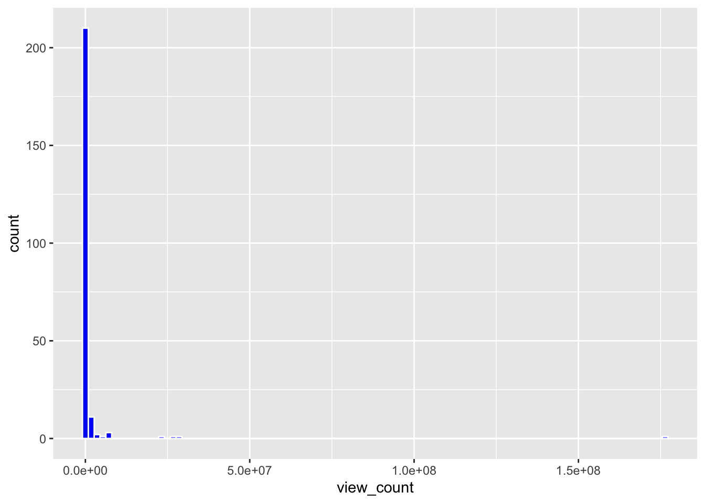
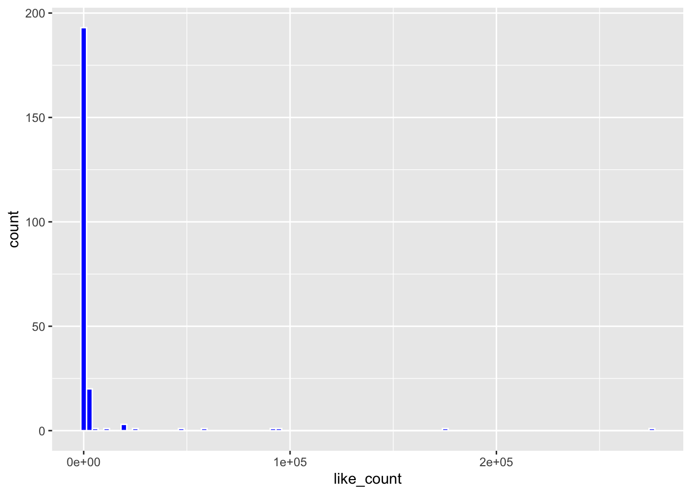
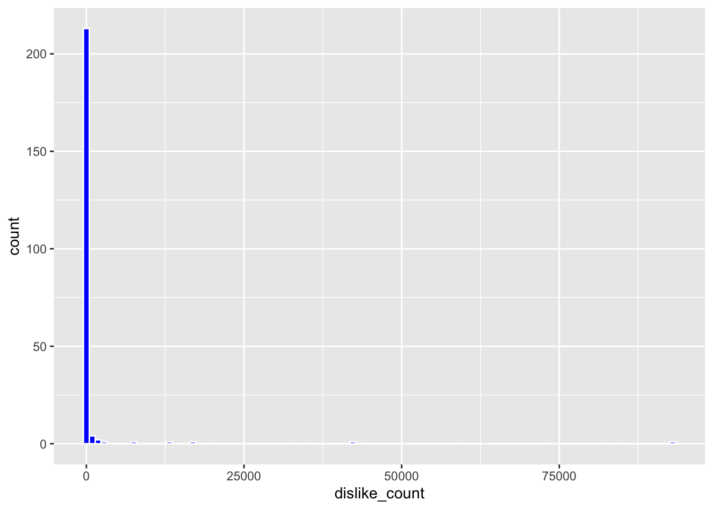
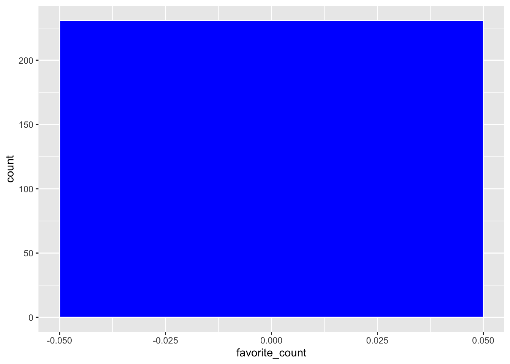
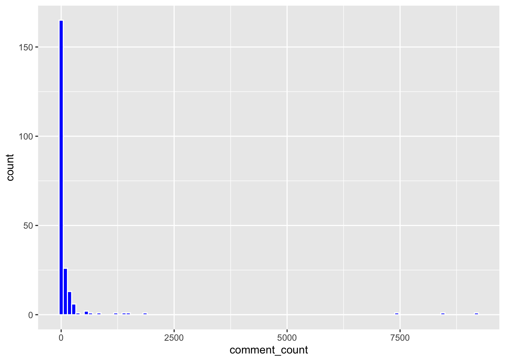
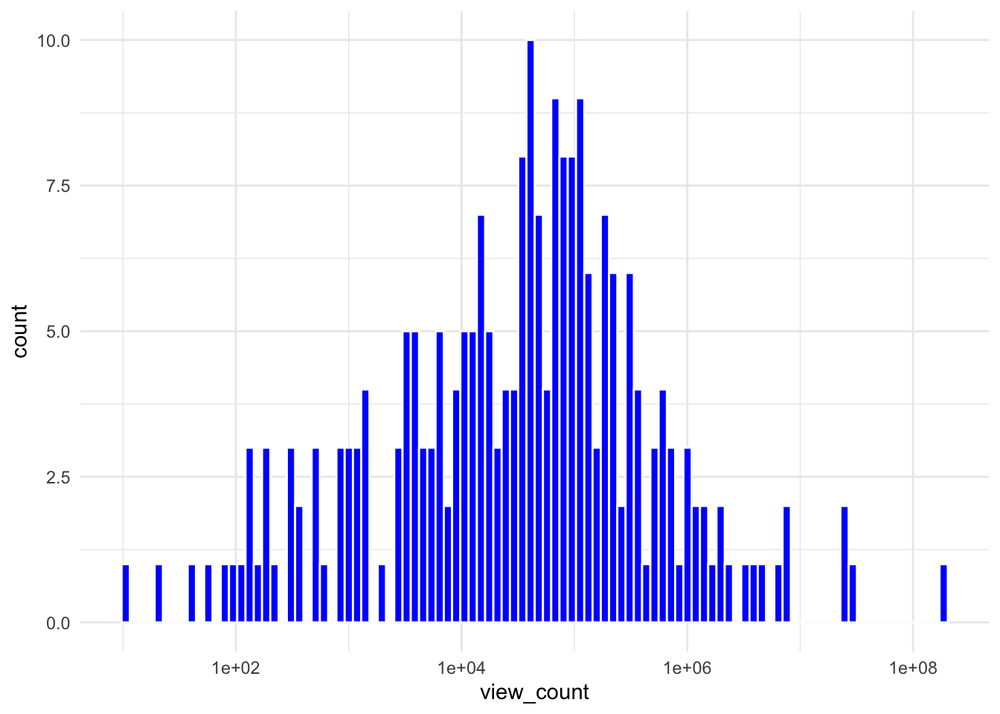
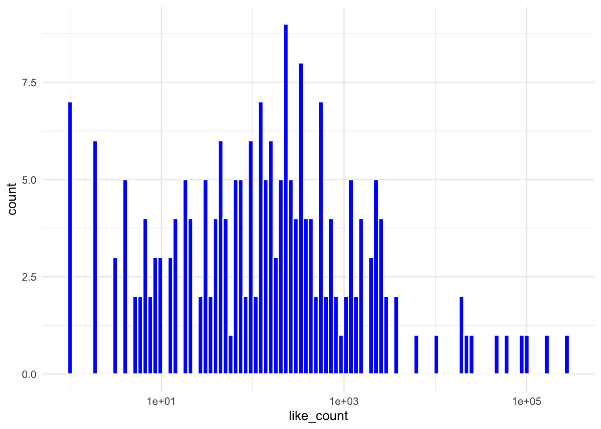
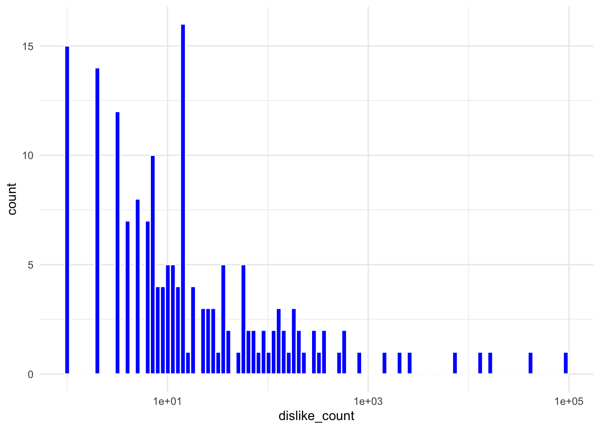
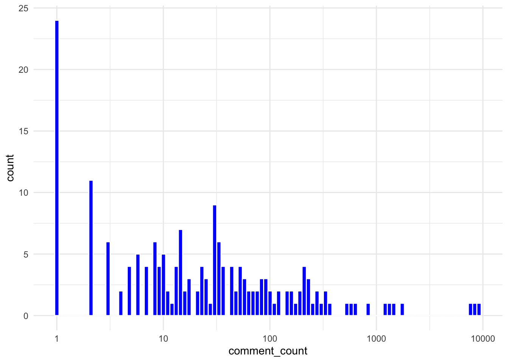

#1
# Version 1: Using a loop
# Define function to simulate a random walk with n steps
random_walk1 <- function(n_steps) {
# Set starting position at 0
position <- 0
# Loop through each step from 1 to n_steps
for (i in seq_len(n_steps)) {
# Randomly choose direction: +1 or -1
direction <- sample(c(1, -1), size = 1)
if (direction == 1) {
# Set 5% chance of moving forward 10
paces <- if (runif(1) < 0.05) 10 else 1
} else {
# Set 20% chance of moving back 3
paces <- if (runif(1) < 0.20) -3 else -1
}
# Update position
position <- position + paces
}
# Show finishing place
return(position)
}
# Version 2: Using built-in R vectorized functions.
# Attribution of sources note for following function: Used Microsoft copilot to help me identify ifelse and runif functions as good options
random_walk2 <- function(n_steps) {
# Determine direction
direction <- sample(c(1, -1), size = n_steps, replace = TRUE)
# Initialize vector to store actual movement values
paces <- numeric(n_steps)
# Isolate where direction is +1
forward <- which(direction == 1)
# Create 5% chance of moving 10 steps
extra_forward <- runif(length(forward)) <= 0.05
# Move proper number of steps
paces[forward] <- ifelse(extra_forward, 10, 1)
# Isolate where direction is -1
backwards <- which(direction == -1)
# Create 20% chance of moving 3 steps back
extra_backwards <-runif(length(backwards)) < 0.20
# Move proper number of steps
paces[backwards] <- ifelse(extra_backwards, -3, -1)
# Return the total position after all steps
return(sum(paces))
}
# Version 3: Using an apply function
random_walk3 <- function(n_steps) {
steps <- sapply(seq_len(n_steps), function(i) {
# Choose direction: +1 or -1
direction <- sample(c(1, -1), size = 1)
# If direction is +1, apply 5% chance to move +10 instead
if (direction == 1) {
if (runif(1) < 0.05) return(10) else return(1)
} else {
# If direction is -1, apply 20% chance to move -3 instead
if (runif(1) < 0.20) return(-3) else return(-1)
}
})
# Return the total position after summing all steps
return(sum(steps))
}
# Control the randomization
set.seed(32)
# Demonstrate that all versions work
random_walk1(10)[1] 8random_walk2(10)[1] -2random_walk3(10)[1] -2random_walk1(1000)[1] 86random_walk2(1000)[1] 149random_walk3(1000)[1] 3library(microbenchmark)
microbenchmark(
# Run version 1 with 1000 steps
loop = random_walk1(1000),
# Run version 2 with 1000 steps
vectorized = random_walk2(1000),
# Run version 3 with 1000 steps
apply = random_walk3(1000),
times = 10
)Warning in microbenchmark(loop = random_walk1(1000), vectorized =
random_walk2(1000), : less accurate nanosecond times to avoid potential integer
overflowsUnit: microseconds
expr min lq mean median uq max neval
loop 1812.610 1883.335 1984.6624 1948.2380 2037.413 2257.542 10
vectorized 41.492 44.157 49.3107 48.3185 55.637 60.352 10
apply 2046.105 2112.607 2355.0728 2217.7925 2403.789 3089.596 10microbenchmark(
# Run version 1 with 100,000 steps
loop = random_walk1(100000),
# Run version 2 with 100,000 steps
vectorized = random_walk2(100000),
# Run version 3 with 100,000 steps
apply = random_walk3(100000),
times = 10
)Unit: milliseconds
expr min lq mean median uq max
loop 198.967957 203.092352 209.879865 204.243365 220.653841 230.405978
vectorized 3.071228 3.131785 3.197865 3.176782 3.288159 3.368396
apply 220.737604 228.184475 238.828415 233.189201 243.928024 278.522020
neval
10
10
10# Comparing the speeds at low inputs and high inputs: As expected, the high inputs take longer than the slow inputs.. This is evident because the high input times are measured in milliseconds, while the low input times are measured in microseconds.
# Within each input ranges, the speeds are fastest in version 2 (using built in R vectorized functions), with version 1 coming in second and version 3 being the slowest
# Build Monte Carlo simulation function, in other words, use a large number of trials and see how many times we get our desired output. Due to the large number of trials, our result should closely mirror the true probability of landing at 0
prob_zero <- function(n_steps, n_trials = 10000, walk_fn =
# Use version 2 for its speed
random_walk2){
results <- replicate(n_trials, walk_fn(n_steps))
mean(results == 0)
}
# Estimate probabilities for different step sizes
set.seed(32)
prob_10 <- prob_zero(10)
prob_100 <- prob_zero(100)
prob_1000 <- prob_zero(1000)
# Display results
prob_10[1] 0.1299# The probability of landing at zero when starting at 10 is about 13%
prob_100[1] 0.0212# The probability of landing at zero when starting at 100 is about 2.1%
prob_1000[1] 0.0051# The probability of landing at zero when starting at 1000 is about 0.5%
#2
# Build a Monte Carlo Sim (high n)
day_sim <- function(n_days = 10000) {
# Attribution of sources note for following function: Used Microsoft copilot to help me figure out that multiplying n_days by the number of hours is the way to encompass how long each time period lasts
# Simulate hours with poisson distribution
morning <- rpois(n_days * 7, lambda = 1)
daytime <- rpois(n_days * 7, lambda = 8)
evening <- rpois(n_days * 5, lambda = 12)
rush_hour <- rnorm(n_days * 2, mean = 60, sd = sqrt(12))
# Combine all hours into daily totals
full_day <- matrix(c(morning, daytime, evening, rush_hour), nrow = n_days)
# Add the daily totals together
daily_total <- rowSums(full_day)
# Find the average
return(mean(daily_total))
}
estimate <- day_sim()
print(estimate)[1] 242.8518# The estimation for average numbers of cars that pass this intersection per day is 243.13
#3
# Load the dataset
youtube <- read.csv('https://raw.githubusercontent.com/rfordatascience/tidytuesday/master/data/2021/2021-03-02/youtube.csv')
# Subtract off identifying columns
youtube_de_identified <- subset(youtube, select = -c(brand, superbowl_ads_dot_com_url,
title, description, channel_title, published_at, youtube_url))
# 3a) Report the dimensions of the data after removing these columns.
dim(youtube_de_identified)[1] 247 18library(ggplot2)
# List of variables to examine
vars <- c("view_count", "like_count", "dislike_count", "favorite_count", "comment_count")
# Examine view count distribution
ggplot(youtube_de_identified, aes(x = view_count)) + geom_histogram(bins = 100, fill = "blue", color = "white") Warning: Removed 16 rows containing non-finite outside the scale range
(`stat_bin()`).
# Examine like count distribution
ggplot(youtube_de_identified, aes(x = like_count)) + geom_histogram(bins = 100, fill = "blue", color = "white") Warning: Removed 22 rows containing non-finite outside the scale range
(`stat_bin()`).
# Examine dislike count distribution
ggplot(youtube_de_identified, aes(x = dislike_count)) + geom_histogram(bins = 100, fill = "blue", color = "white") Warning: Removed 22 rows containing non-finite outside the scale range
(`stat_bin()`).
# Examine favorite count distribution
ggplot(youtube_de_identified, aes(x = favorite_count)) + geom_histogram(bins = 100, fill = "blue", color = "white") Warning: Removed 16 rows containing non-finite outside the scale range
(`stat_bin()`).
# Examine comment count distribution
ggplot(youtube_de_identified, aes(x = comment_count)) + geom_histogram(bins = 100, fill = "blue", color = "white") Warning: Removed 25 rows containing non-finite outside the scale range
(`stat_bin()`).
# Based on the histograms, the "view_count", "like_count", "dislike_count", and "comment_count seem like variables that could use a transformation prior to being used as the outcome in a linear regression model, and the "favorite_count" seems like a variable that would not be appropriate to use as the outcome in a linear regression model, because that column is composed entirely of 0s and NAs.
# Attribution of Sources Note: Used Microsoft Copilot to identify log as a smart transformation, and to help me set axes and minimal theme
# Loop through each count variable
for (v in c("view_count", "like_count", "dislike_count", "comment_count")) {
# Create and print histogram with log-scaled x-axis
print(
# Set variable for x-axis
ggplot(youtube_de_identified, aes_string(x = v)) +
# Plot histogram
geom_histogram(bins = 100, fill = "blue", color = "white") +
# Use log scale to handle skewness
scale_x_log10() +
# Apply clean theme
theme_minimal()
)
}Warning: `aes_string()` was deprecated in ggplot2 3.0.0.
ℹ Please use tidy evaluation idioms with `aes()`.
ℹ See also `vignette("ggplot2-in-packages")` for more information.Warning: Removed 16 rows containing non-finite outside the scale range
(`stat_bin()`).
Warning in scale_x_log10(): log-10 transformation introduced infinite values.Warning: Removed 31 rows containing non-finite outside the scale range
(`stat_bin()`).
Warning in scale_x_log10(): log-10 transformation introduced infinite values.Warning: Removed 69 rows containing non-finite outside the scale range
(`stat_bin()`).
Warning in scale_x_log10(): log-10 transformation introduced infinite values.Warning: Removed 66 rows containing non-finite outside the scale range
(`stat_bin()`).
# Step 1: Log-transform outcome variables
youtube_de_identified$log_view_count <- log1p(youtube_de_identified$view_count)
youtube_de_identified$log_like_count <- log1p(youtube_de_identified$like_count)
youtube_de_identified$log_dislike_count <- log1p(youtube_de_identified$dislike_count)
youtube_de_identified$log_comment_count <- log1p(youtube_de_identified$comment_count)
# Step 2: Define predictors
predictors <- c("funny", "show_product_quickly", "patriotic", "celebrity", "danger", "animals","use_sex", "year")
formula_base <- paste(predictors, collapse = " + ")
# Step 3: Fit models
model_view <- lm(as.formula(paste("log_view_count ~", formula_base)), data = youtube_de_identified)
model_like <- lm(as.formula(paste("log_like_count ~", formula_base)), data = youtube_de_identified)
model_dislike <- lm(as.formula(paste("log_dislike_count ~", formula_base)), data = youtube_de_identified)
model_comment <- lm(as.formula(paste("log_comment_count ~", formula_base)), data = youtube_de_identified)
# Step 4: Review summaries
summary(model_view)
Call:
lm(formula = as.formula(paste("log_view_count ~", formula_base)),
data = youtube_de_identified)
Residuals:
Min 1Q Median 3Q Max
-7.7742 -1.6152 0.1311 1.7036 8.4481
Coefficients:
Estimate Std. Error t value Pr(>|t|)
(Intercept) -31.55016 71.00538 -0.444 0.657
funnyTRUE 0.56492 0.46702 1.210 0.228
show_product_quicklyTRUE 0.21089 0.40530 0.520 0.603
patrioticTRUE 0.50699 0.53811 0.942 0.347
celebrityTRUE 0.03548 0.42228 0.084 0.933
dangerTRUE 0.63131 0.41812 1.510 0.132
animalsTRUE -0.31002 0.39348 -0.788 0.432
use_sexTRUE -0.38671 0.44782 -0.864 0.389
year 0.02053 0.03531 0.582 0.561
Residual standard error: 2.787 on 222 degrees of freedom
(16 observations deleted due to missingness)
Multiple R-squared: 0.02694, Adjusted R-squared: -0.008122
F-statistic: 0.7684 on 8 and 222 DF, p-value: 0.631summary(model_like)
Call:
lm(formula = as.formula(paste("log_like_count ~", formula_base)),
data = youtube_de_identified)
Residuals:
Min 1Q Median 3Q Max
-5.2860 -1.6333 0.0868 1.4911 7.7431
Coefficients:
Estimate Std. Error t value Pr(>|t|)
(Intercept) -150.51357 63.45723 -2.372 0.0186 *
funnyTRUE 0.47476 0.41816 1.135 0.2575
show_product_quicklyTRUE 0.20017 0.36391 0.550 0.5828
patrioticTRUE 0.80689 0.49791 1.621 0.1066
celebrityTRUE 0.41283 0.38212 1.080 0.2812
dangerTRUE 0.63895 0.37350 1.711 0.0886 .
animalsTRUE -0.05944 0.35298 -0.168 0.8664
use_sexTRUE -0.42952 0.40064 -1.072 0.2849
year 0.07685 0.03155 2.436 0.0157 *
---
Signif. codes: 0 '***' 0.001 '**' 0.01 '*' 0.05 '.' 0.1 ' ' 1
Residual standard error: 2.467 on 216 degrees of freedom
(22 observations deleted due to missingness)
Multiple R-squared: 0.07313, Adjusted R-squared: 0.03881
F-statistic: 2.13 on 8 and 216 DF, p-value: 0.0342summary(model_dislike)
Call:
lm(formula = as.formula(paste("log_dislike_count ~", formula_base)),
data = youtube_de_identified)
Residuals:
Min 1Q Median 3Q Max
-4.0292 -1.3299 -0.3192 0.8986 8.7219
Coefficients:
Estimate Std. Error t value Pr(>|t|)
(Intercept) -183.06813 53.34768 -3.432 0.000719 ***
funnyTRUE 0.25949 0.35154 0.738 0.461224
show_product_quicklyTRUE 0.27511 0.30593 0.899 0.369515
patrioticTRUE 0.81407 0.41859 1.945 0.053095 .
celebrityTRUE -0.20214 0.32125 -0.629 0.529852
dangerTRUE 0.22184 0.31400 0.707 0.480630
animalsTRUE -0.21192 0.29675 -0.714 0.475911
use_sexTRUE -0.32980 0.33681 -0.979 0.328583
year 0.09207 0.02653 3.471 0.000626 ***
---
Signif. codes: 0 '***' 0.001 '**' 0.01 '*' 0.05 '.' 0.1 ' ' 1
Residual standard error: 2.074 on 216 degrees of freedom
(22 observations deleted due to missingness)
Multiple R-squared: 0.09753, Adjusted R-squared: 0.06411
F-statistic: 2.918 on 8 and 216 DF, p-value: 0.004115summary(model_comment)
Call:
lm(formula = as.formula(paste("log_comment_count ~", formula_base)),
data = youtube_de_identified)
Residuals:
Min 1Q Median 3Q Max
-4.1372 -1.4665 -0.1427 1.4061 5.8468
Coefficients:
Estimate Std. Error t value Pr(>|t|)
(Intercept) -99.09835 52.92351 -1.872 0.0625 .
funnyTRUE 0.21954 0.34528 0.636 0.5256
show_product_quicklyTRUE 0.40939 0.30229 1.354 0.1771
patrioticTRUE 0.66698 0.39902 1.672 0.0961 .
celebrityTRUE 0.29767 0.31541 0.944 0.3464
dangerTRUE 0.17784 0.31069 0.572 0.5677
animalsTRUE -0.26802 0.29347 -0.913 0.3621
use_sexTRUE -0.39323 0.33163 -1.186 0.2370
year 0.05034 0.02632 1.913 0.0571 .
---
Signif. codes: 0 '***' 0.001 '**' 0.01 '*' 0.05 '.' 0.1 ' ' 1
Residual standard error: 2.039 on 213 degrees of freedom
(25 observations deleted due to missingness)
Multiple R-squared: 0.06535, Adjusted R-squared: 0.03025
F-statistic: 1.862 on 8 and 213 DF, p-value: 0.06748# Aside from year and intercept, the result with the lowest p-value, indicating potential statistical significance comes from the "patriotic" binary flag in the "dislike count" regression chart. This p-value is 0.053. The coefficient is positive, indicating that the commercials that were patriotic had an increased number of dislikes.
# Attribution of Sources note: When I first tried calculating Beta this way I was getting a column of only NA. I used Microsoft Copilot to help me realize I needed to clean the data to fix that issue.
# Load necessary library
library(dplyr)
Attaching package: 'dplyr'The following objects are masked from 'package:stats':
filter, lagThe following objects are masked from 'package:base':
intersect, setdiff, setequal, union# Create design matrix X
X <- model.matrix(~ funny + show_product_quickly + patriotic + celebrity + danger + animals + use_sex + year, data = youtube_de_identified)
# Create response variable y
y <- youtube_de_identified$log_view_count
# Test to see if there is missing data
sum(!complete.cases(X, y)) [1] 16# Get rid of the missing data
complete_rows <- complete.cases(X, y)
X_clean <- X[complete_rows, ]
y_clean <- y[complete_rows]
# Use OLS
beta_hat <- solve(t(X_clean) %*% X_clean) %*% t(X_clean) %*% y_clean
# Display results
beta_hat [,1]
(Intercept) -31.55015804
funnyTRUE 0.56492445
show_product_quicklyTRUE 0.21088918
patrioticTRUE 0.50699051
celebrityTRUE 0.03547862
dangerTRUE 0.63131085
animalsTRUE -0.31001838
use_sexTRUE -0.38670726
year 0.02053399